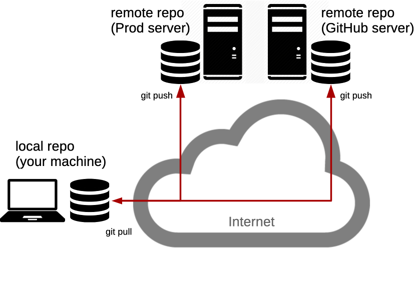

# Collaborating with Git Architecture & Deployment <!-- .element: class="subtitle" --> **Notes:** Learn how to share your work with [Git](https://git-scm.com), through remote repositories on [GitHub](https://github.com), and what to do when someone else's work gets there first. These slides go on from where [the Git slides](/2026/course/201-git/slides/) end: in the calculator repository, on `main`, with the merge commit. The team repository they push to belongs to the course, so you cannot push to it yourself. You will do all of this with your own group in [Hello GitHub](/2026/course/204-hello-github/). **Recommended reading** - [Version Control with Git](/2026/course/201-git/) - [Collaborating with Git](/2026/course/203-git-collaborating/) --- ## What is a remote? <p></p> **Notes:** A **remote** is another copy of your repository, usually on a server. It holds the whole commit graph, not only the latest version of your files. Every copy holds everything: this is what makes Git a **distributed** version control system. No copy is more important than another, except by agreement. You can have **several remotes**. Collaborating with others means **pushing** your commits to a remote, and **fetching** theirs from it, whenever you want to share work. Nothing is shared until you do. --- ## GitHub <!-- .element: class="hidden" --> <img class="w-1/2" src="images/github-7433692cabbfa132f34adb034e7909fa.png" alt="GitHub" /> [GitHub](https://github.com) is a place to keep copies of your repositories. **Notes:** GitHub hosts Git repositories on its servers, so that you and others can push to them and fetch from them. It adds features Git does not have, like access control, issues and pull requests, but the repositories themselves are ordinary Git repositories. When you create a repository on GitHub to push an existing project to it, create it **without** a README, a license or a `.gitignore` file. Any of them makes a first commit on GitHub, and your first push is then refused, for the reason you will see later in these slides. Fetching and merging, as these slides do later, does not help in this case. The two histories have no commit in common, so Git refuses to merge them: `fatal: refusing to merge unrelated histories`. Create a new, empty repository on GitHub instead, remove the old remote with `git remote rm origin`, and add the new one. --- ### Where we left off <simgit-story name='branching' start-chapter='delete-sub' end-chapter='delete-sub' sizing='auto-height' theme='light' commit-representation='below' duration='1200' start-delay='1500' defer-until-visible='true' replay-on-revisit='true' controls='false'></simgit-story> **Notes:** These slides go on from where the Git slides end: in the calculator repository, on `main`, with the merge commit of `sub`. The repository has no remote: the Git slides removed the one `git clone` had added. --- ### Add a remote ```bash $> git remote add origin git@github.com:jdoe/git-calculator.git $> git remote -v origin git@github.com:jdoe/git-calculator.git (fetch) origin git@github.com:jdoe/git-calculator.git (push) ``` **Notes:** The repository just created on GitHub is **empty**. `git remote add` gives your repository the name and the address of a remote: nothing is sent yet. `origin` is only a **conventional name**, the one `git clone` gives the remote it cloned from. The Git slides removed that remote with `git remote rm origin` after cloning, so the name is free again. The address is the SSH URL GitHub shows for the repository. Git connects to GitHub with SSH, and authenticates you with your SSH key. --- ### Push ```bash $> git push -u origin main ... To github.com:jdoe/git-calculator.git * [new branch] main -> main branch 'main' set up to track 'origin/main'. ``` **Notes:** `git push origin main` sends the commit your `main` points to, with every commit behind it that the remote does not have yet, to the remote named `origin`, and asks it to move its own `main` there. GitHub had no `main` yet, so it creates one: `[new branch]`. The commits are now on GitHub: its page for the repository shows the same commits, with the same hashes. `-u` (`--set-upstream`) makes `origin/main` the **upstream** of your `main`: the branch `git status` compares it to, and the one `git push` and `git pull` without arguments use. You only need it for the first push of a branch. --- ### After the push <!-- .element: class="hidden" --> <!-- .slide: class="full-diagram" --> <simgit-story name='collaborating' start-chapter='origin-add' end-chapter='origin-push' through-chapter='origin-push' sizing='explicit' theme='light' commit-representation='below' duration='1200' start-delay='1500' defer-until-visible='true' replay-on-revisit='true'></simgit-story> **Notes:** The push copied your commits to GitHub, where `main` now points to the same commit as yours. In your repository, `origin/main` records where it is. --- ### Remote-tracking branches ```bash $> git graph * e0711c3 (HEAD -> main, origin/main) Merge branch 'sub' |\ | * 7f2a5d0 Implement subtraction * | a4160d7 Fix addition |/ * 907e519 Add readme * 24bb77c Add license * 073570e Initial commit $> git status On branch main Your branch is up to date with 'origin/main'. ``` **Notes:** `origin/main` is a **remote-tracking branch**: your record of where `main` was on `origin` the last time your Git talked to it. It is **not a live view**. If someone else pushes to `origin`, your `origin/main` does not move until you fetch. You never commit on a remote-tracking branch yourself. Git moves it when you push, fetch or pull. So "up to date with 'origin/main'" only means that your `main` and your record of `origin`'s `main` point to the same commit. It says nothing of what happened on GitHub since. --- ### Your team's repository Don't forget to share your work with [the team](https://github.com/ArchiDep/git-calculator-team): ```bash $> git remote add team \ git@github.com:ArchiDep/git-calculator-team.git ``` **Notes:** A repository can have as many remotes as you want, each under its own name. This one is called `team`, and could be a company repository, for example. --- ### Differences in the team repository <!-- .element: class="hidden" --> <!-- .slide: class="full-diagram" --> <simgit-story name='collaboratingTeamBeforeFetch' start-chapter='team-add' end-chapter='team-add' through-chapter='padding' sizing='explicit' theme='light' commit-representation='below' duration='1200' start-delay='1500' defer-until-visible='true' replay-on-revisit='true' controls='false'></simgit-story> **Notes:** The team's repository started from the same first three commits as yours. Since then, a colleague has pushed a commit to it, `9dcba66`, which you do not have. Your `main` has moved on too, with the subtraction and the addition fix. --- ### Push to the team Same command, different remote: will it work? ```bash $> git push team main ``` **Notes:** This is the same command that just worked with `origin`, sent to the team's repository instead. --- ### Push to the team ```bash $> git push team main To github.com:ArchiDep/git-calculator-team.git ! [rejected] main -> main (fetch first) error: failed to push some refs to 'github.com:ArchiDep/git-calculator-team.git' hint: Updates were rejected because the remote contains work hint: that you do not have locally. This is usually caused by hint: another repository pushing to the same ref. If you want hint: to integrate the remote changes, use 'git pull' before hint: pushing again. ``` **Notes:** The push is **rejected**. Read the hint: the remote contains work that you do not have locally. The reason Git gives, `(fetch first)`, says that the team's `main` points to a commit your repository does not know at all: the colleague's commit. Your Git cannot even tell how it relates to your own commits. It has to get it first. --- ### Nothing moved <!-- .element: class="hidden" --> <!-- .slide: class="full-diagram" --> <simgit-story name='collaboratingTeamBeforeFetch' start-chapter='team-rejected' end-chapter='team-rejected' through-chapter='padding' sizing='explicit' theme='light' commit-representation='below' duration='1200' start-delay='1500' defer-until-visible='true' replay-on-revisit='true' controls='false'></simgit-story> **Notes:** A rejected push changes **nothing**, on either side: not the team repository, not your branches. Your repository does not even have a `team/main` yet, since it has never fetched from `team`. --- ### Fetch ```bash $> git fetch team ... From github.com:ArchiDep/git-calculator-team * [new branch] main -> team/main ``` **Notes:** `git fetch` downloads the commits of a remote that you do not have, and updates your remote-tracking branches: here it creates `team/main`, pointing to the colleague's commit. The fetch changed **neither your `main` nor any of your files**. It only shows you what the others have done. --- ### After the fetch <!-- .element: class="hidden" --> <!-- .slide: class="full-diagram" --> <simgit-story name='collaboratingTeamFetched' start-chapter='team-rejected' end-chapter='team-fetch' through-chapter='padding' sizing='explicit' theme='light' commit-representation='below' duration='1200' start-delay='1500' defer-until-visible='true' replay-on-revisit='true'></simgit-story> **Notes:** The fetch brought the colleague's commit into your repository, and `team/main` points to it. Your `main` has not moved. Your history and the team's now start from the same commit, `907e519`, and each adds different work to it. This is a **divergent history**, exactly like `sub` and `fix-add` in the Git slides. `team/main` is a branch like the others, which you can look at, compare to, and merge. --- ### The divergent history ```bash $> git graph * e0711c3 (HEAD -> main, origin/main) Merge branch 'sub' |\ | * 7f2a5d0 Implement subtraction * | a4160d7 Fix addition |/ | * 9dcba66 (team/main) Finish the calculator |/ * 907e519 Add readme * 24bb77c Add license * 073570e Initial commit ``` **Notes:** `git graph` shows the same thing as the diagram. Use `git log team/main` to read the colleague's commit, and `git diff main team/main` to see everything that differs between your `main` and theirs, before you merge anything. --- ### Push after fetching Your Git knows the colleague's commit now. Will it work? ```bash $> git push team main ``` **Notes:** The fetch got the commit the first push was missing. Try again. --- ### Push after fetching ```bash $> git push team main To github.com:ArchiDep/git-calculator-team.git ! [rejected] main -> main (non-fast-forward) error: failed to push some refs to 'github.com:ArchiDep/git-calculator-team.git' hint: Updates were rejected because the tip of your current hint: branch is behind its remote counterpart. If you want to hint: integrate the remote changes, use 'git pull' before hint: pushing again. ``` **Notes:** Rejected again, for a different reason: `(non-fast-forward)`. A remote only accepts a push that moves its branch **forward**, a **fast-forward**. On the team's repository, `main` points to the colleague's commit, `9dcba66`, which is not part of your `main`'s history: the two histories have diverged. Moving the team's `main` to your commit would throw the colleague's work away, so GitHub refuses. Knowing about the colleague's commit is not enough: your `main` has to **include** it. That is what a merge does. --- ### Merge Can this one fast-forward? ```bash $> git merge team/main ``` **Notes:** No: the histories have diverged, so Git has to do a **three-way merge**, as it did with `sub`. --- ### Before the merge <!-- .element: class="hidden" --> <!-- .slide: class="full-diagram" --> <simgit-story name='collaboratingTeamFetched' start-chapter='team-fetch' end-chapter='team-fetch' through-chapter='padding' sizing='explicit' theme='light' commit-representation='below' duration='1200' start-delay='1500' defer-until-visible='true' replay-on-revisit='true' controls='false'></simgit-story> **Notes:** Moving your `main` to the colleague's commit, `9dcba66`, would lose your own commits since `907e519`: the subtraction, the addition fix and their merge. A fast-forward is not possible. --- ### Merge ```bash $> git merge team/main Auto-merging subtraction.js CONFLICT (content): Merge conflict in subtraction.js Automatic merge failed; fix conflicts and then commit the result. ``` **Notes:** This time, Git cannot finish on its own. The colleague also implemented the subtraction, on the same line of `subtraction.js` as you, but differently. Git cannot choose between the two versions, so it stops in the middle of the merge and leaves the choice to you. This is a **merge conflict**. --- ### A merge in progress ```bash $> git status On branch main Your branch is up to date with 'origin/main'. You have unmerged paths. (fix conflicts and run "git commit") (use "git merge --abort" to abort the merge) Changes to be committed: modified: index.html Unmerged paths: (use "git add <file>..." to mark resolution) both modified: subtraction.js ``` **Notes:** `git status` shows where the merge stands: - **`index.html` is already staged.** The colleague also changed the title of the page, a line you did not touch, so Git merged that change on its own. - **`subtraction.js` is "both modified"**: you and the colleague changed the same line, and it is in conflict. A conflict is about **lines**, not whole files: Git merges everything it can, and only stops on the lines that both sides changed. "Up to date with 'origin/main'" is about the other remote, `origin`, as far as your last push to it knows. It has nothing to do with the merge in progress. If you want to give up, `git merge --abort` puts everything back as it was before the merge. --- ### Conflict markers ```js /** * Takes two numbers, a and b, and returns their subtraction. */ function subtract(a, b) { <<<<<<< HEAD return a - b; ======= return -b + a; >>>>>>> team/main } calculate('subtraction', subtract); ``` **Notes:** Git has written **both versions** of the conflicting lines into the file, between **conflict markers**: - Between `<<<<<<< HEAD` and `=======` is **your** version, the one of the branch you are on. - Between `=======` and `>>>>>>> team/main` is **theirs**, the one of the branch you are merging. Only the line both of you changed is in conflict. The rest of the file is already merged. **Choosing is your job**: keep one version, the other, or write a third that combines them, then **remove the markers**. Git does not check that the result makes sense. Test it before you go on. --- ### Resolve the conflict ```js /** * Takes two numbers, a and b, and returns their subtraction. */ function subtract(a, b) { return a - b; } calculate('subtraction', subtract); ``` ```bash $> git add subtraction.js $> git status On branch main Your branch is up to date with 'origin/main'. All conflicts fixed but you are still merging. (use "git commit" to conclude merge) ``` **Notes:** Both versions compute the same thing, so keeping yours is enough. Once the file is as it should be, `git add` marks the conflict as **resolved**: it stages the file as you want it in the merge commit. --- ### Finish the merge ```bash $> git commit -m "Merge team's work" [main a92ed4f] Merge team's work ``` **Notes:** The commit concludes the merge. `--message` or `-m` sets the commit message, instead of opening your editor. As with `sub`, this is a **merge commit** with two parents: `e0711c3`, the commit you were on, and `9dcba66`, the colleague's commit. Your `main` now contains both your work and theirs. --- ### The merge commit <!-- .element: class="hidden" --> <!-- .slide: class="full-diagram" --> <simgit-story name='collaboratingTeam' start-chapter='team-fetch' end-chapter='team-merge' through-chapter='team-push' sizing='explicit' theme='light' commit-representation='below' duration='1200' start-delay='1500' defer-until-visible='true' replay-on-revisit='true'></simgit-story> **Notes:** The merge commit has two parents: `e0711c3`, the commit you were on, and `9dcba66`, the colleague's commit. Your `main` moved to it. --- ### Push the merge Will it work now? ```bash $> git push team main ``` **Notes:** Your `main` now includes the colleague's commit. --- ### Push the merge ```bash $> git push team main ... To github.com:ArchiDep/git-calculator-team.git 9dcba66..a92ed4f main -> main ``` **Notes:** Yes. Your merge commit has the colleague's commit as a parent, so moving the team's `main` from `9dcba66` to `a92ed4f` only moves it forward: from the team repository's point of view, it is a **fast-forward**. `9dcba66..a92ed4f` is the move: from where the team's `main` was to where it is now. The push also moved `team/main` in your repository. --- ### After pushing the merge <!-- .element: class="hidden" --> <!-- .slide: class="full-diagram" --> <simgit-story name='collaboratingTeam' start-chapter='team-merge' end-chapter='team-push' sizing='explicit' theme='light' commit-representation='below' duration='1200' start-delay='1500' defer-until-visible='true' replay-on-revisit='true'></simgit-story> **Notes:** The team's `main` moved forward to your merge commit, and so did `team/main` in your repository. --- ### Remotes do not sync ```bash $> git status On branch main Your branch is ahead of 'origin/main' by 2 commits. (use "git push" to publish your local commits) ``` **Notes:** Your repository on GitHub, `origin`, knows nothing about what happened with `team`. It is still where your first push left it. Your `main` is 2 commits ahead of it: the colleague's commit, and your merge commit. **Git never synchronizes anything by itself.** Each repository only changes when someone pushes to it, or fetches or pulls into it. Here, a `git push` would bring `origin` up to date. --- ### Your repository on GitHub is behind <!-- .element: class="hidden" --> <!-- .slide: class="full-diagram" --> <simgit-story name='collaborating' start-chapter='origin-behind' end-chapter='origin-behind' through-chapter='origin-padding' sizing='explicit' theme='light' commit-representation='below' duration='1200' start-delay='1500' defer-until-visible='true' replay-on-revisit='true' controls='false'></simgit-story> **Notes:** `origin/main`, and `main` on GitHub, are still where your first push left them. --- ### `git pull` ```bash $> git pull team main ``` is the same as: ```bash $> git fetch team $> git merge team/main ``` **Notes:** `git pull` fetches, then merges what it fetched into the current branch. That is exactly what you just did in two steps. Doing it in two steps lets you look at what the others did before you merge it; `git pull` is the shortcut once you know what to expect. On a branch with an upstream, like `main` after `git push -u origin main`, `git pull` without arguments fetches from and merges the upstream. [git]: https://git-scm.com [github]: https://github.com
GitHub
Backup copy